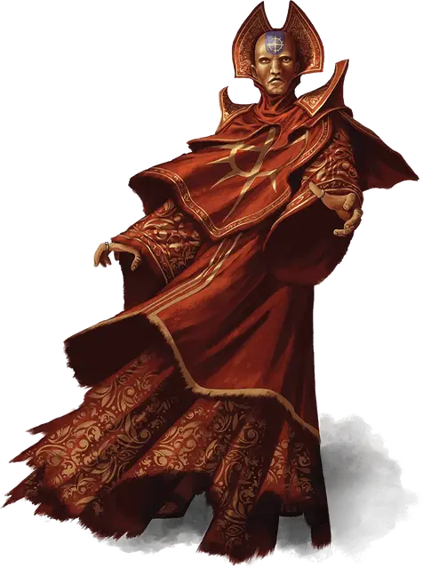

Азбара Джос
Azbara Jos
Средний Гуманоид (Человек), законно-злой, именной НИП

Класс Доспеха 13 (16 с доспехом мага)
Хиты 39 (6к8 + 12)
Скорость 30 футов
| мод | спас | ||
|---|---|---|---|
| СИЛ | 9 | −1 | −1 |
| ЛОВ | 16 | +3 | +3 |
| ТЕЛ | 14 | +2 | +2 |
| мод | спас | ||
|---|---|---|---|
| ИНТ | 16 | +3 | +3 |
| МДР | 13 | +1 | +1 |
| ХАР | 11 | +0 | +0 |
Навыки Магия +5, Обман +2, Проницательность +3, Скрытность +5
Чувства пассивное Восприятие 11
Языки Общий, Драконий, Инфернальный, Первичный, Тэйский
Опасность 4 (1100 опыта)
Бонус мастерства +2
Особенности
Специальное снаряжение. У Азбара есть два свитка с заклинанием доспехи мага [mage armor].
Мощные заговоры. Когда Азбара накладывает заговор школы Воплощения и промахивается или цель преуспевает в спасброске от него, цель всё же получает половину урона от заговора без дополнительных эффектов.
Построение заклинаний. Когда Азбара накладывает заклинание школы Воплощения, которое затрагивает других существ, которых он видит, он может выбрать из них некоторое число, равное 1 + уровень заклинания. Выбранные существа преуспевают в спасброске от сотворённого заклинания. Эти существа не получают урона от этого заклинания, даже если должны были получить половину его урона.
Использование заклинаний. Азбара является заклинателем 6-го уровня. Его базовой характеристикой является Интеллект (Сл спасброска от заклинания 13, +5 к попаданию атаками заклинаниями). У Азбары подготовлены следующие заклинания волшебника:
• Заговоры (по желанию): волшебная рука [mage hand], фокусы [prestidigitation], луч холода [ray of frost], электрошок [shocking grasp]
• 1 уровень (4 ячейки): туманное облако [fog cloud], волшебная стрела [magic missile], щит [shield], волна грома [thunderwave]
• 2 уровень (3 ячейки): невидимость [invisibility], туманный шаг [misty step], палящий луч [scorching ray]
• 3 уровень (3 ячейки): контрзаклинание [counterspell], рассеивание магии [dispel magic], огненный шар [fireball]
Действия
Кинжал. Рукопашная или Дальнобойная атака оружием: +5 к попаданию, досягаемость 5 футов или дистанция 20 / 60 футов, одна цель. Попадание: 5 (1к4+3) колющего урона.
Описание
Азбара Джос [Azbara Jos] - мужчина человек и Красный Маг Тэя. Красные Маги повсеместно пользуются дурной репутацией, потому Азбара испытывает некоторые неудобства в связи с тем, что вынужден скрывать свою принадлежность к этой группе - он постоянно носит шерстяную шапочку с завязками, закрывающую его бритую татуированную голову. Впрочем, такой способ не особо действенный и наблюдательные персонажи могут заметить края татуировки, выглядывающие из-под шапочки, пройдя успешно проверку Мудрости (Восприятия) Сл 15. Многие жители Тэя бреют головы и наносят на них татуировки, но лишь немногие из них принадлежат к Красным Магам. Бесчисленное множество Тэйцев бежало из своей страны, когда лич Сзасс Тэм захватил там власть, потому они не редки на Побережье Мечей. Если его спросить, Джос утверждает, что он один из таких беженцев, пытающихся найти пристанище в то время, как его страну захватила нежить. На самом деле, всё, кроме отрицания причастности к Красным Магам, является правдой.
Джос оплатит место на одной из повозок культистов, в отличие от нескольких прочих путешественников, которым отказали в этом ранее. Он держится особняком от прочих путешественников и редко разговаривает с кем-либо кроме человека, который, судя по всему, является лидером культистов.